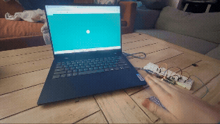
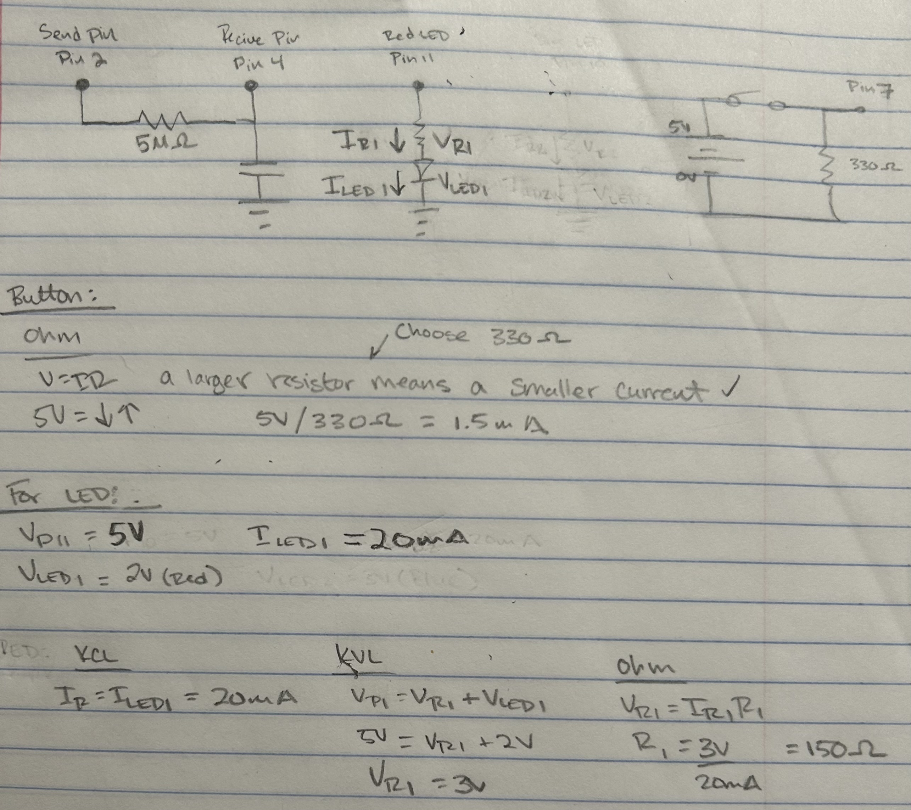
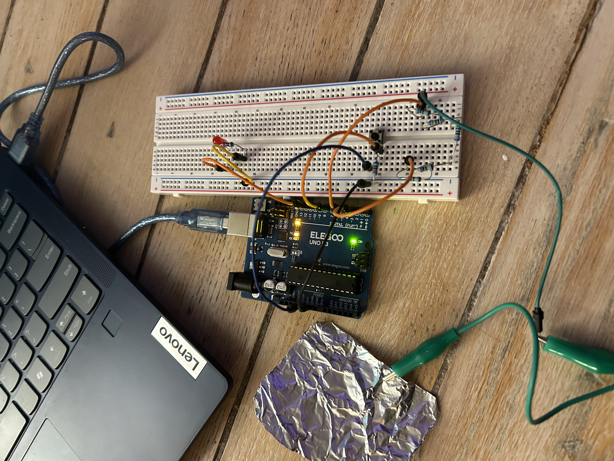

Here is all the documentation for assignment 6!

Pictured above is the schematic of the the A6 circuits. I used the schematic to plan out how to build the circut and determine what resiter I needed to use for the capacitive sensor. The capacitive sensor has a recive pin at Pin 4, a send pin at Pin 2, and utilizes a 5M ohm resistor. The 5M ohm resistor was chosen because I wanted the capacitive sensor to sense how close my hand was. This meant I needed to use a capacitor greater tan 1M ohm, which only responds to absolute touch. I played around with different resistor amounts during class when learning about capacitors, and determined that I would use 5M ohms for this assignmet since it responded to a hand hovering. The red LED uses 2V with a current of 20mA. Using Kirchoff's and Ohm's laws, I determined the resister needed to be 150 ohms for the red LED .

Pictured above is the circuts I built based off of the schematic I drew. I used 5 1M ohm resistors to have a total resistance of 5M ohms, as according to my schematic. I used a resister of 220 ohms for the LED, since that was the closest resistor I had over the calculations of 150 ohms.
sketch.ino
/*
A6
Ella Gebers
Reads a capactive sensor to determine the size of a circle on the webpage.
If the button is pressed, tells the webpage to change the background color.
If the mouse is moved on the webpage, the LED light turns on.
Code for calibrating the system is from "Calibration" Ardiuno built in examples,
which is Public Domain. The capacitor code was made based on 11/3/26 in
class examples.
*/
// Capacitive Sensor library
#include
// set the button to pin 7
const int BUTTON_PIN = 7;
// set the button to pin 11
const int LED_PIN = 11;
// Set up the Capacitive sensor with a send and recieve pin
// first param is send, second is receive
CapacitiveSensor cs_s2_r4 = CapacitiveSensor(2,4);
// minimum sensor value
long minVal = 100000;
// maximum sensor value
long maxVal = 0;
// smoothing variable to hold decimals
float smoothed = 0;
// The capacitive sensor value
int sensorScaled = 0;
void setup() {
// initialize serial communications
Serial.begin(9600);
// set the timeout for parseInt
Serial.setTimeout(10);
// set LED_PIN to an output
pinMode(LED_PIN, OUTPUT);
// set BUTTON_PIN to an Input
pinMode(BUTTON_PIN, INPUT);
// record when callibrating begins
unsigned long start = millis();
// calibrate during the first five seconds
while (millis() - start < 5000) {
// read the capacitor:
long csValue = cs_s2_r4.capacitiveSensor(30);
if (csValue < 0) continue;
// record the maximum sensor value
if (csValue > maxVal) {
// sets the maxVal if there is a new max
maxVal = csValue;
}
// record the minimum sensor value
if (csValue < minVal) {
// sets the minVal is there is a new min
minVal = csValue;
}
}
// set smoothed value to where the untouched sensor reads
smoothed = minVal;
}
void loop() {
long csReading = cs_s2_r4.capacitiveSensor(30);
// in case the sensor value is outside the range seen during calibration
if (csReading >= 0) {
csReading = constrain (csReading, minVal, maxVal);
//smooth the data
smoothed = 0.9 * smoothed + 0.1 * csReading;
// apply the calibration to the sensor reading
}
sensorScaled = map ((long)smoothed, minVal, maxVal, 0, 255);
// read the button value and print it to serial
Serial.print(digitalRead(BUTTON_PIN));
// add a comma to the serial line
Serial.print(",");
// add the capacitive sensor reading to the serial line
Serial.println(sensorScaled);
// if there's serial data
if (Serial.available() > 0) { // if there's serial data
// read the serial data sent from web
int inByte = Serial.read();
// write the serial data to the led pin. If 1 is read,
// set the LED to HIGH to turn it on.
digitalWrite(LED_PIN, inByte == 1 ? HIGH : LOW);
}
// delay to not overload serial
delay(50);
}
index.js
/*
A6
Ella Gebers
Reads a capactive sensor to determine the size of a circle on the webpage.
If the button is pressed, tells the webpage to change the background color.
If the mouse is moved on the webpage, the LED light turns on.
Code is inspired by the "brightness" and "button" p5-arduino examples.
I utilized Claude as a tool to debug my code, as documented on my assignment webpage.
*/
// match the baud rate to the Arduino sketch
const BAUD_RATE = 9600;
// Declare global variables
let port, connectBtn;
// buttonState variable
let buttonState = 0;
// capacitive sensor value
let capValue = 0;
// variable for if the led should be on or off
let led = false;
// variable to hold mouse movements
let mouseActive = false;
// variable to hold when the mouse was last active
let lastMouseMove = 0;
// ms of stillness before it counts as "stopped"
const MOUSE_TIMEOUT = 300;
function setup() {
// Run the serial setup function
setupSerial();
// Create a canvas that is the size of our browser window.
// windowWidth and windowHeight are p5 variables
createCanvas(windowWidth, windowHeight);
// p5 text settings. BOLD and CENTER are constants provided by p5.
// See the "Typography" section in the p5 reference: https://p5js.org/reference/
textFont("system-ui", 50);
textStyle(BOLD);
textAlign(CENTER, CENTER);
}
function draw() {
// Check whether the port is open (see checkPort function below)
const portIsOpen = checkPort();
// If the port is not open, exit the draw loop
if (!portIsOpen) return;
// Read whatever has arrived since the last frame
if (port.opened() && port.available() > 0) {
// read one line from the serial port, up to the newline character
let line = port.readUntil("\n");
// check that the line isn't empty
if (line.length > 0) {
// remove whitespace, then split the line to read button state and capacitive value
let parts = line.trim().split(",");
// only continue if there is exactly two values, ignoring partial/garbled lines
if (parts.length === 2) {
// convert the first value to an int, then set the buttonState
buttonState = int(parts[0]);
// convert the second value to an int, the set the capacitive sensor value
capValue = int(parts[1]);
}
}
}
//check if the mouse is activly moving
if (millis() - lastMouseMove > MOUSE_TIMEOUT) {
mouseActive = false;
}
// Change text and colors based on button state.
// If the mouse is moving
if(mouseActive){
// set background color
background("pink")
// If the button is not pressed
} else if (buttonState === 0) {
// set background color
background("darkcyan");
// If the button is pressed
} else if (buttonState === 1) {
// set background color
background("lightskyblue");
}
// Tell the Arduino only when the state changes
if (mouseActive !== led) {
// set led to true if mouse is active, false if not active
led = mouseActive;
// write 1(mouse active, light should be or),
// or 0 (mouse is not active, light should be off)
// and send it to Arduino
port.write(led ? 1 : 0);
}
// make the circle white
fill("white")
// change the size of the circle drawn on screen
// based on capacitive sensor value
let size = map(capValue, 0, 255, 20, 300);
// create circle
circle(width / 2, height / 2, size);
}
// function to update mouseActive and lastMouseMove variables
// if the mouse has moved
function mouseMoved() {
// set mouseActive varable to true
mouseActive = true;
// update time since the mouse was last moved
lastMouseMove = millis();
}
// Three helper functions for managing the serial connection.
function setupSerial() {
port = createSerial();
// Check to see if there are any ports we have used previously
let usedPorts = usedSerialPorts();
if (usedPorts.length > 0) {
// If there are ports we've used, open the first one
port.open(usedPorts[0], BAUD_RATE);
}
// create a connect button
connectBtn = createButton("Connect to Arduino");
connectBtn.position(5, 5); // Position the button in the top left of the screen.
connectBtn.mouseClicked(onConnectButtonClicked); // When the button is clicked, run the onConnectButtonClicked function
}
function checkPort() {
if (!port.opened()) {
// If the port is not open, change button text
connectBtn.html("Connect to Arduino");
// Set background to gray
background("gray");
return false;
} else {
// Otherwise we are connected
connectBtn.html("Disconnect");
return true;
}
}
function onConnectButtonClicked() {
// When the connect button is clicked
if (!port.opened()) {
// If the port is not opened, we open it
port.open(BAUD_RATE);
} else {
// Otherwise, we close it!
port.close();
}
}
index.html
<!--A6
Ella Gebers
Creates a webpage and loads the index.js file.
Code is modified from the "button" p5-arduino example.
-->
<!DOCTYPE html>
<html lang="en">
<head>
<!-- setting up the webpage -->
<meta charset="UTF-8" />
<meta name="viewport" content="width=device-width, initial-scale=1.0" />
<script src="https://cdn.jsdelivr.net/npm/p5@1.9.0/lib/p5.js"></script>
<script src="https://unpkg.com/@gohai/p5.webserial@^1/libraries/p5.webserial.js"></script>
<!-- Webpage title -->
<title>A6!</title>
<!-- Webpage style -->
<style>
html,
body {
padding: 0;
margin: 0;
overflow: hidden;
}
canvas {
display: block;
}
</style>
</head>
<body>
<!-- load index.js -->
<script src="index.js"></script>
</body>
</html>Pictured above is the working circut I built running the code I wrote.